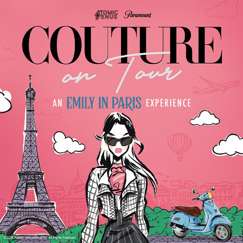

Eventos y curiosidades
Eventos Especiales
Couture on Tour: An Emily in Paris Experience
Este evento inmersivo de moda, inspirado en la serie, recorrerá más de 20 ciudades de Estados Unidos a partir del 19 de mayo de 2025 en San Antonio. Los asistentes podrán disfrutar de una pasarela de alta costura, exhibiciones de vestuarios de la serie, oportunidades para fotos y una experiencia de compras única.
Para más información hacer click en la imagen:
PaleyFest LA 2022
En este evento, el elenco y los productores de Emily en París, incluidos Darren Star, Andrew Fleming, Lily Collins, Ashley Park, Lucas Bravo y Camille Razat, participaron en una mesa redonda donde discutieron sobre la serie, compartieron anécdotas y respondieron preguntas de los fans.
Curiosidades y Datos Interesantes
Impacto Cultural
1. Turismo en París La serie generó un aumento notable del interés turístico en París. Lugares como la Place de l’Estrapade (donde vive Emily), cafeterías locales y sitios icónicos como la Torre Eiffel, se convirtieron en destinos aún más populares entre los fans de la serie que desean revivir las escenas.
2. Tendencias de moda Emily en París influyó fuertemente en el mundo de la moda. Sus looks coloridos, audaces y glamorosos inspiraron tendencias y colecciones. Marcas como Chanel, Balmain y Christian Louboutin aprovecharon esta ola para destacar sus diseños en la serie.
3. Debate cultural La serie generó discusiones sobre los estereotipos culturales, especialmente entre franceses y estadounidenses. Muchos críticos franceses señalaron cómo la serie mostraba una versión exagerada o superficial de la cultura parisina, mientras que otros la defendieron como una comedia ligera con encanto.
4. Redes Sociales y marketing Emily representa el poder del marketing digital y las redes sociales. La serie pone en valor cómo una influencer puede convertirse en una figura clave dentro de una empresa, reflejando dinámicas actuales en el mundo laboral.
5. Inspiración personal Más allá de la ficción, muchos espectadores se sintieron inspirados a seguir sus pasiones, mudarse al extranjero, comenzar carreras en marketing o moda, o simplemente atreverse a nuevos comienzos.
Colaboraciones Gastronómicas
1. Häagen-Dazs x Emily in Paris (2023-2024) a icónica marca de helados lanzó una línea especial inspirada en la serie, con sabores gourmet que reflejan el estilo chic y parisino de Emily. Algunos sabores incluyeron combinaciones como Macaron Double Chocolate Ganache y Strawberry & Raspberry Macaron. La campaña fue acompañada de envases diseñados con estética parisina y colaboraciones con influencers.
2. McDonald’s Francia – Menú Inspirado Si bien no fue una colaboración directa con Emily en París, McDonald’s en Francia se subió a la ola de las series populares y lanzó un Happy Meal con juguetes de series icónicas, en el mismo período de alta popularidad de la serie. Esto ayudó a reforzar la conexión de la cultura pop con la gastronomía local.
3. Experiencias gastronómicas temáticas Restaurantes y cafés en París aprovecharon el éxito de la serie para crear menús temáticos de Emily en París, incluyendo brunchs, postres decorados con corazones o la “baguette de Emily”. Además, se organizaron tours culinarios por los lugares donde ella come en la serie (como el famoso Café de Flore o Boulangerie Moderne).